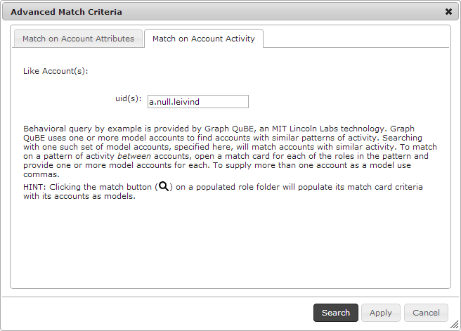

Activity Search
After you have identified and filed accounts of interest, you can use Influent's transactional pattern search capabilities to find accounts with similar activity histories. Influent enables you to search for:
- Individual accounts with similar account transaction activities
- Sets of accounts with similar account transaction patterns between them
Match on Account Activity
To search for accounts based on the activity of an example account or a set of accounts:
- Mouse over a filed account card in the Influent workspace and click its Search
 button.
button. - On the Advanced Match Criteria dialog, switch to the Match on Account Activity tab.
- Note that the ID of the selected account appears in the uid(s) field. 
- Click Search.
Accounts with similar transactional behavior to the example will be returned in the search results.

Find Similar Patterns
With several accounts filed in the workspace, you can use the Find Patterns Like This command in the Patterns menu (located in the upper right corner) to identify transactions between accounts that are similar to the flow between your filed results.

Navigating Search Results
By default, Influent returns a paginated list of the top 50 results for the search terms that you entered. Each page contains 12 results. Both of these values are configurable for each deployment of Influent.
Any search result can be added to a file and further investigated by branching its transaction flow.